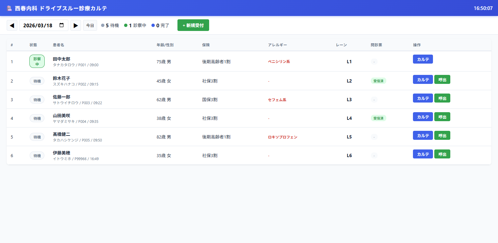
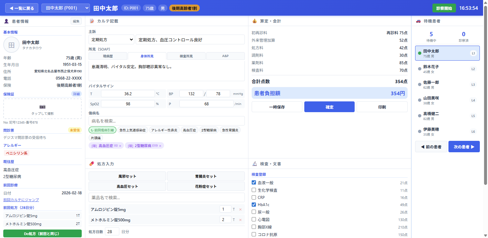

ドライブスルー診療 電子カルテ v0.2
操作マニュアル
西春内科・在宅クリニック | 作成日: 2026-03-18 | バージョン: v0.2
目次
1. システム概要
本システムは、西春内科・在宅クリニックのドライブスルー診療向けに開発されたブラウザベースの電子カルテです。M3 DigiKarに代わる独立システムとして設計されています。
主な特徴
- ブラウザのみで動作（タブレット/PC対応）
- ダッシュボード一画面型（C案ベース）
- Google スプレッドシートをデータベースとして使用
- GAS（Google Apps Script）によるWeb API バックエンド
- 薬の算定自動計算（五捨五超入、初再診料、処方料、調剤料、薬剤料）
- 時間外・休日・深夜加算の自動判定
画面構成
当日の受付患者を一覧表示。日付切替、新規受付、呼出ボタン。
4カラムGrid。患者情報・カルテ記載・処方・算定・検査・待機リスト。
2. 画面1: 患者一覧（トップページ）

画面構成
| 要素 | 説明 |
|---|---|
| ヘッダー | クリニック名、リアルタイム時計 |
| 日付ナビ | ◀ / ▶ で日付切替、日付ピッカー、「今日」ボタン |
| 統計バー | 待機・診察中・完了の患者数をリアルタイム表示 |
| 「+ 新規受付」ボタン | 新規患者登録モーダルを開く |
| 患者テーブル | #、状態、患者名（フリガナ・ID・到着時刻）、年齢/性別、保険、アレルギー、レーン、問診票、操作ボタン |
状態バッジ
- 待機 … 来院済み、診察前
- 診察中 … 現在診察中（緑パルスアニメーション）
- 完了 … 診察確定済み（行が半透明）
操作ボタン
- カルテ: カルテダッシュボード（画面2）を開く
- 呼出: 待機→診察中に変更（前の診察中患者は自動で「完了」に）
3. 新規受付の登録

入力項目
| 項目 | 必須 | 説明 |
|---|---|---|
| 氏名 | 必須 | 患者氏名（漢字） |
| フリガナ | 任意 | カタカナ表記 |
| 生年月日 | 任意 | 年齢が自動計算される |
| 性別 | 必須 | 男 / 女 |
| 住所 | 任意 | 患者住所 |
| 電話番号 | 任意 | 連絡先 |
| 保険種別 | 必須 | 社保3割 / 国保3割 / 後期高齢者1-3割 / 公費 / 自費 |
| 車両番号 | 任意 | ドライブスルー用、ナンバープレート |
| レーン | 必須 | 駐車レーン番号（自動連番） |
操作手順

4. 画面2: カルテダッシュボード

レイアウト構成（4カラム）
| 位置 | パネル | 内容 |
|---|---|---|
| 左列（260px） | 患者情報 | 基本情報・保険証・問診票・アレルギー・既往歴・前回処方・メモ・車両情報 |
| 中央上 | カルテ記載 | 主訴（プルダウン＋自由記載）、SOAP 4タブ、バイタル、傷病名検索 |
| 中央下 | 処方入力 | セット処方、薬品検索、処方日数 |
| 右上 | 算定・会計 | 初再診料、外来管理加算、時間外加算、処方料、調剤料、薬剤料、検査料、合計、患者負担 |
| 右中 | 検査・文書 | 検査チェックリスト、文書作成ボタン |
| 右端（220px） | 待機患者 | 待機リスト、前の患者/次の患者ボタン |
ヘッダー要素
- 「◀ 一覧に戻る」: 画面1に戻る（未保存データがあれば確認ダイアログ）
- 患者セレクタ: ドロップダウンで患者を切替
- 患者名・ID・年齢・性別・保険バッジ
- 時間外加算バッジ: 時間外/休日/深夜加算が自動表示（赤色）
- 「診察開始」ボタン: 開始時刻記録、赤色に変化
5. 左パネル: 患者情報
左パネルは患者の全情報を縦スクロールで表示します。上部に「編集」ボタンがあり、患者情報を修正できます。
表示セクション
| セクション | 内容 |
|---|---|
| 基本情報 | 氏名・フリガナ・年齢・生年月日・住所・電話・保険種別（サムネイルは名前の頭文字） |
| 保険証 | 写真アップロードエリア（タップで撮影）、記号・番号表示、「詳細」ボタンで保険証モーダルを開く |
| 問診票 | デジスマ問診票の受信状態バッジ（受信済/未受信）、症状・期間・体温の表示、「カルテに反映」ボタン |
| アレルギー | 赤色タグで表示（例: ペニシリン系） |
| 既往歴 | 疾患名一覧 |
| 前回診療 | 前回受診日、「前回カルテにジャンプ」リンク |
| 前回処方 | 薬品名と用量の一覧、「Do処方（前回と同じ）」ボタン |
| 患者メモ | 自由記載テキストエリア（自動保存） |
| 車両情報 | ナンバープレート、レーン番号（黄色背景） |
6. 中央上: カルテ記載

主訴入力
プルダウン（16種類の定型主訴）と自由記載テキストの併用。プルダウンで選択するとテキスト欄に自動追記されます。
定型主訴: 発熱、咳嗽、咽頭痛、鼻汁、頭痛、腹痛、嘔吐・下痢、倦怠感、胸痛、呼吸困難、めまい、腰痛、関節痛、皮疹、排尿障害、定期処方
所見（SOAP 4タブ）

| タブ | 内容 |
|---|---|
| 現病歴 | 発症経過、受診動機など |
| 身体所見 | 視診・聴診・触診の所見 |
| 検査所見 | 血液検査等の結果 |
| A&P | アセスメント（診断）とプラン（治療方針） |
バイタルサイン
体温(T)、血圧(BP)、SpO2、脈拍(P) を 2x2 グリッドで入力。単位は自動表示。
傷病名
- 検索入力: 病名またはICD-10コードで検索（20件のマスタ）
- クイックボタン: よく使う6傷病名をワンタップ追加
- 前回傷病引継ボタン: 既往歴がある患者で表示（緑色）、前回の傷病名を自動追加
- 確定/疑い切替: 各傷病名タグの [確/疑] をクリックでトグル
- 削除: × ボタンで削除
7. 中央下: 処方入力
セット処方（4種）
| セット名 | 内容 | 日数 |
|---|---|---|
| 風邪セット | アセトアミノフェン200mg 3T + カルボシステイン500mg 3T + トラネキサム酸250mg 3T + レバミピド100mg 3T | 5日 |
| 胃腸炎セット | ドンペリドン10mg 3T + レバミピド100mg 3T + ロペラミド1mg 1T | 5日 |
| 高血圧セット | アムロジピン5mg 1T | 28日 |
| 花粉症セット | フェキソフェナジン60mg 2T + モンテルカスト10mg 1T | 14日 |
個別薬品検索
薬品名またはカテゴリ名（降圧、糖尿病、鎮痛など）で検索。薬品マスタは20品目登録済み。
Do処方
左パネルの「Do処方（前回と同じ）」ボタンで前回処方を一括コピー。日数も自動設定。
処方日数
1〜90日で設定可能。薬剤料は「薬価 × 用量 × 日数」で自動計算されます。
8. 右上: 算定・会計

自動計算される項目
| 項目 | 点数 | 条件 |
|---|---|---|
| 初診料 | 291点 | 初診時 |
| 再診料 | 75点 | 再診時 |
| 外来管理加算 | 52点 | 再診時のみ自動加算 |
| 処方料 | 42点 / 29点 | 7種未満: 42点 / 7種以上: 29点（逓減） |
| 調剤料 | 11〜33点 | 日数により段階的（7日以下:11 / 14日以下:19 / 21日以下:25 / 28日以下:30 / 29日以上:33） |
| 薬剤料 | 自動計算 | 五捨五超入（0.5以下切捨・0.5超切上）で点数化 |
| 検査料 | 各検査の点数合計 | チェックした検査のみ |
| 時間外加算 | 85点 | 平日18時以降 or 土曜12時以降 |
| 休日加算 | 250点 | 日曜・祝日 |
| 深夜加算 | 480点 | 22時〜6時 |
患者負担額
合計点数 × 10円 × 負担割合（1割/2割/3割）で計算。青色背景で大きく表示。
操作ボタン
- 一時保存: 現在の入力内容をGASバックエンドに保存（ステータス「一時保存」）
- 確定: 確認ダイアログ → 全データ保存 → 患者ステータスを「完了」に
- 印刷: 印刷プレビュー（モック）
9. 右中: 検査・文書
検査チェックリスト
| 検査名 | 点数 |
|---|---|
| 血液一般 | 21点 |
| 生化学検査 | 11点 |
| CRP | 16点 |
| HbA1c | 49点 |
| 尿一般 | 26点 |
| 心電図 | 130点 |
| 胸部X線 | 210点 |
| コロナ抗原 | 150点 |
| インフル抗原 | 150点 |
| SpO2モニタ | 30点 |
チェックを入れると算定パネルの検査料に自動反映されます。
文書作成
- 診療情報提供書（紹介状）: 紹介先・診療科・傷病名・経過を記載。傷病名と現病歴は自動転記。
- 診断書: 患者氏名・傷病名・所見を記載。
- 院外処方箋: 患者情報・処方内容が自動表示。

10. 右端: 待機患者
全患者のステータスをリアルタイム表示するサイドパネルです。
表示要素
- 待機中 / 診察済の人数カウンター
- 患者リスト（ステータスドット付き: 灰=待機 / 緑=診察中 / 青=完了）
- 現在の患者は青背景でハイライト
- クリックで患者を切替
ナビゲーションボタン
- ◀ 前の患者: 直前に診察していた患者に戻る（履歴ベース）
- 次の患者 ▶: 次の待機患者を呼出（現在の患者は自動で「完了」に）
11. 各種モーダル
患者情報編集モーダル

左パネル上部の「編集」ボタンから開きます。氏名・フリガナ・生年月日・性別・住所・電話番号・保険種別・アレルギーを編集可能。保存するとGASバックエンドにも反映されます。
保険証モーダル

左パネルの保険証セクション「詳細」ボタンから開きます。保険証写真のアップロード（カメラ撮影対応）、記号・番号、保険者名、有効期限、区分（社保/国保/後期高齢者/公費）、負担割合（1割/2割/3割/0割）を設定できます。
問診票モーダル

デジスマ問診票の受信データを表示します。「カルテに反映」ボタンで主訴・現病歴・体温をカルテに自動転記します。
12. 診察ワークフロー（一連の流れ）
13. データベース構造

データベースはGoogle スプレッドシート上に11シートで構成されています。全カラム名は日本語です。
シート一覧
| シート名 | 用途 | 主要カラム |
|---|---|---|
| 患者マスタ | 患者基本情報 | 患者ID, 氏名, フリガナ, 生年月日, 年齢, 性別, 住所, 電話番号, アレルギー, 既往歴, メモ, 写真URL |
| 保険証 | 保険証情報 | 保険証ID, 患者ID, 保険区分, 保険者番号, 記号, 番号, 負担割合, 公費, 写真URL, 有効開始日, 有効終了日 |
| カルテ | 診察記録 | カルテID, 患者ID, 受診日, 診察開始/終了時刻, 主訴, 現病歴, 身体所見, 検査所見, A&P, バイタル(体温/BP/SpO2/脈拍), 初診フラグ, 時間区分, ステータス, 車両情報 |
| 処方 | 処方データ | 処方ID, カルテID, 患者ID, 薬品名, 薬品コード, 用量, 単位, 用法, 日数, 薬価 |
| 傷病名 | 傷病名記録 | 傷病名ID, カルテID, 患者ID, 傷病名, ICD10コード, 確定区分(確定/疑い), 発症日 |
| 検査 | 検査記録 | 検査ID, カルテID, 患者ID, 検査名, 検査コード, 結果, 備考 |
| 算定 | 算定データ | 算定ID, カルテID, 患者ID, 項目名, 点数, 合計点数, 負担額, 負担割合 |
| 問診票 | 問診票データ | 問診票ID, 患者ID, カルテID, 質問, 回答, 入力元 |
| 薬品マスタ | 薬品マスタ | 薬品ID, 薬品名, 薬品コード, 薬価, 単位, カテゴリ, 禁忌 |
| 傷病名マスタ | 傷病名マスタ | 傷病名ID, 傷病名, ICD10コード, カテゴリ |
| 文書 | 文書データ | 文書ID, カルテID, 患者ID, 文書種別, タイトル, 内容JSON |
API構成
GAS（Google Apps Script）でWeb APIを構築。スタンドアロン型（SpreadsheetApp.openById）。
| メソッド | アクション | 説明 |
|---|---|---|
| GET | getPatients | 全患者一覧取得 |
| GET | getPatient | 患者ID指定で1件取得 |
| GET | getKarteList | カルテ一覧（患者ID/日付フィルタ） |
| GET | getKarte | カルテ詳細（処方・傷病名・検査・算定含む） |
| GET | getDrugMaster | 薬品マスタ検索 |
| GET | getDiseaseMaster | 傷病名マスタ検索 |
| POST | savePatient | 患者登録/更新 |
| POST | saveKarte | カルテ保存/更新 |
| POST | savePrescription | 処方保存 |
| POST | saveDiagnosis | 傷病名保存 |
| POST | saveExam | 検査保存 |
| POST | saveBilling | 算定保存 |
| POST | saveInsurance | 保険証保存 |
| POST | saveDocument | 文書保存 |
14. デプロイ情報
| リソース | ID / URL |
|---|---|
| GASプロジェクト | 1YQ7vfPtWAi6Vy6iQIS9fVj6J6ZR6CaGJpW8bgh9i0g-gnaGtsP-CVoYp |
| Web App URL | https://script.google.com/macros/s/AKfycbwFzGLG20GaSLxfdRDAg1ATqQu_s5MWYF045Rlc3OH01duvrL2rqlP9VSQxCEodiePX/exec |
| スプレッドシート | 1FYpePnWd33udmESL1zNnoinSMsrioRrvXtrJDguRWbw |
ファイル構成
| ファイル | 行数 | 内容 |
|---|---|---|
| index.html | 323行 | HTML構造（2画面 + モーダル5種） |
| style.css | 614行 | 全CSS（CSS変数、Grid、パネル、モーダル） |
| app.js | 1,006行 | 全JavaScript（データ・状態管理・UI・API連携） |
| gas_setup.js | 601行 | GASバックエンド（セットアップ + Web API） |
ドライブスルー診療 電子カルテ v0.2 操作マニュアル | 西春内科・在宅クリニック | 2026-03-18